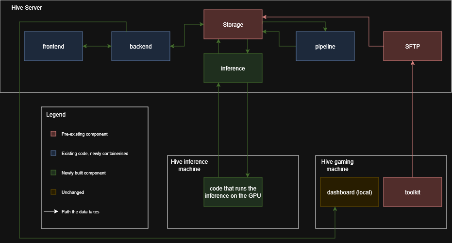

Migrating a multi-institutional analytics toolkit from manual USB deployment to a version-controlled, containerised GitHub workflow — and proving the migration was actually an improvement.

The Play-Smart server architecture: a merge into the production branch triggers a pipeline that rebuilds only the changed service and redeploys it to the Hive server.
Play-Smart is a multi-modal esports analytics toolkit built at The Hive for the Breda Guardians, capturing gaze, facial emotion, and keyboard/mouse data from semi-professional VALORANT players and surfacing it through a coaching dashboard. As more contributors and institutions joined — Tilburg University and the University of Twente — one thing hadn't kept pace: how the toolkit actually got onto a machine.
Deployment was still entirely manual. Files were carried between computers by USB, file paths were hard-coded, and the working environment was reconstructed by hand on every new machine. That's slow, hard to document accurately, and fragile — an environment that runs on one computer often fails on another. As the contributor base grew, this had become an obstacle in its own right, independent of how good the underlying analytics were.
The project came down to two things: designing a branching strategy that partner institutions could actually work with, and building an automated deployment pipeline behind it.
The branching strategy had to solve two problems at once — letting BUas, Tilburg and Twente work independently while BUas kept control over what merged back, and giving rotating student contributors enough structure to avoid serious mistakes without removing their ability to experiment. I combined a forking model between institutions with a hybrid Git-Flow / GitHub-Flow strategy inside each fork: short-lived feature branches merging into a shared dev, and a reviewed pull request into main at the end of each sprint.
On top of that, I containerised the toolkit into a five-container Docker stack — frontend, backend, data pipeline, inference and SFTP — and built a GitHub Actions pipeline that detects which service changed on a merge, rebuilds and publishes only that container, and a self-hosted runner deploys it to the Hive server automatically.
A faster process that's harder to trust isn't a real improvement, so I didn't just ship the new workflow — I tested whether it actually was one. I ran a within-subjects usability study with four experienced project contributors, each of whom deployed the toolkit using both the old manual method and the new GitHub-based method, while I measured deployment time and captured their experience through a questionnaire built on the Technology Acceptance Model and the DORA and SPACE frameworks.
The GitHub-based method was faster for every single participant — roughly 8 to 12 minutes, against 22 to 33 minutes manually — with most of the manual time lost to USB transfer problems rather than the toolkit setup itself. It was also rated easier to use, less mentally demanding, more reliable, and every participant said they'd choose to reuse it. The automated pipeline held up in production too, correctly rebuilding and redeploying only the containers that had actually changed.
The qualification: the sample was four experienced contributors, so this is a consistent result within the team rather than a statistically generalisable one — and it's a conservative estimate, since a first-time user stands to gain even more from a guided, version-controlled process than an expert does.
The study supports adopting the new version-controlled workflow as the standard way of deploying the toolkit going forward. I documented the remaining limitations — small sample size, testing only with experienced users, and some inconsistency in how one dependency gets distributed — as the concrete next steps for whoever picks this up after me.